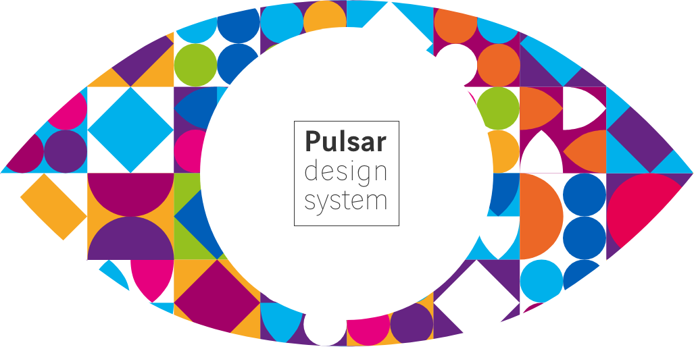
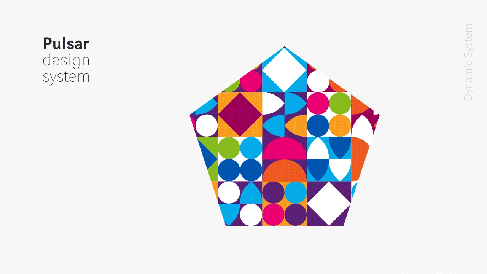
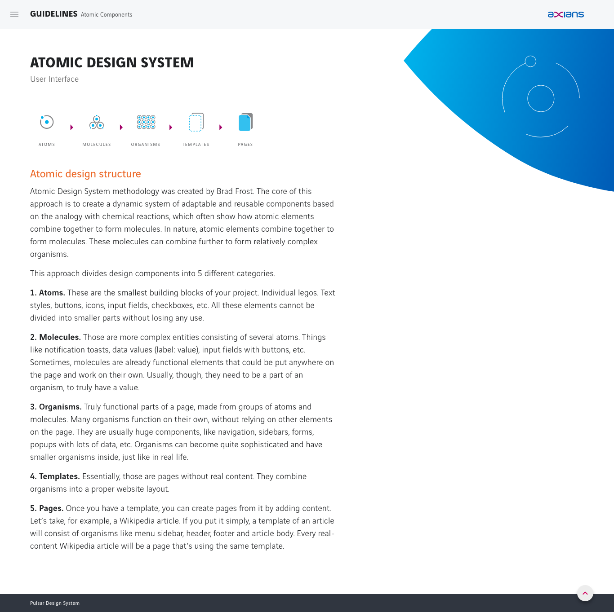
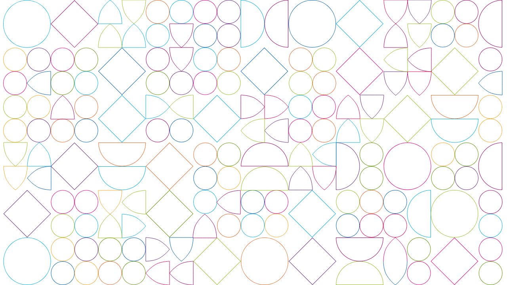
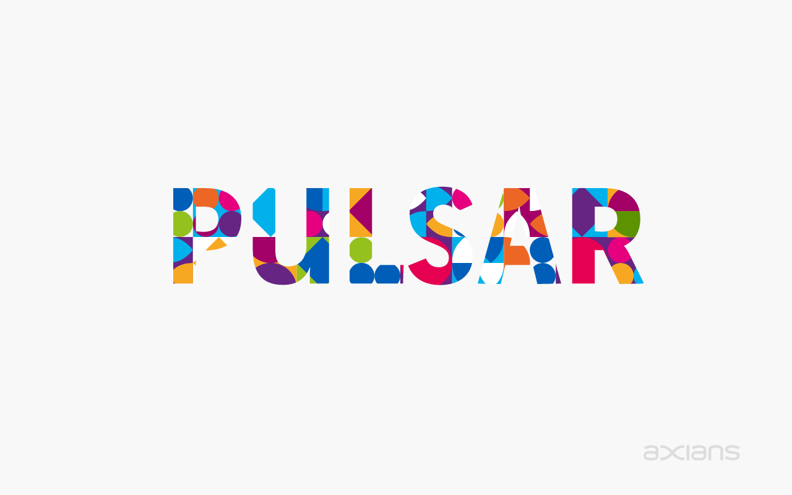

We live times of huge investments in software development and the global market is extremely competitive.
To embrace the digital transformation journey companies are required to invest in their own digital solutions/services. To make this a successful path, they need accurate production processes focused on software with well-defined standards and a clear assumed knowledge base.
More competitive than ever the market demands companies to:
Among these challenges, companies reach to the conclusion that
based on these facts organizations started to invest in Design Systems.
To overcome these challenges and for being in a business unity of software development without a System, I decided to invest in the creation of a Design System.
After realizing that Axians didn't have a DS, I become focused on building a global one for Axians universe. So this project started as a proposal I made to the group at the first Axians Developer’s conference in Marseille, where I presented “Pulsar” my proposal for the first Axian’s global Design System. Taking this challenge forward I started making some evangelistic sessions to all the stakeholders that could benefit from it, and with the help of some colleagues that saw the advantages, I got all the necessary support to do it.
So, the small solitary system, evolved to a global one and I started creating "Pulsar", with the ambitious goal of scaling it for all the company.
In resume, I'm the Pulsar design system manager being responsible for its structure and I lead the Design specs definition in sync with the brand team and the stakeholders involved, from who I have all the support to take and keep this project ongoing..
Take a look here "Pulsar Design System Specs"

It’s an agile living framework, empowered by the collaboration between designers, developers and all the respective stakeholders.
Focused on turning software development processes more efficient, it’s based on code and design reusable assets with standard specification guidelines.
It aims to accelerate implementation maintaining a consistent user experience.
The organization around Design Systems is really important for its evolution and scalability. One of these models, referred by Nathan Curtis, should be used according to each organization's needs.
In a solitary model, one team makes a system available, but with efforts focused primarily on that team’s needs
In a centralized model, one team is in charge of the System and makes it evolve. This team is here to facilitate the work of the other teams and has to be very close to them, to be sure that the System covers most of their needs.
In a federated model (distributed), several people of several teams are in charge of the system. The adoption of the system is quicker because everyone feels involve but it also needs team leaders that will keep an overall vision of it.
Pulsar Design system started as a solitary model but aims to evolve into a centralized model.
A strict system will have a comprehensive and detailed documentation and will be fully synchronized between design and development. There will be a strict process for introducing a new pattern in the System. A strict system should be very broad in order to cover the majority of cases the teams may encounter.
“Airbnb has over 2,000 employees worldwide and around 60 product designers working across multiple work streams. The system is managed entirely by their Design Language System (DLS) team which consists of six designers and their engineering partners for web, native mobile, and React Native platforms.”Excerpt From: Alla Kholmatova. “Design Systems.” iBooks.
A loose system will leave more space for experimentation.
The System is here to provide a framework for the teams while preserving some freedom. Designers and developers are free to use it or not, regarding their particular needs for their product.
We have to find the right balance between strictness and flexibility: a very strict system might repel designers and developers who will not want to use it. On the other side, can we still speak about Design System if this one is too loose?
“The team at TED is small, with only five or six key people responsible for the design system decisions: two UX practitioners and four front-end developers. TED’s system is loosely set up. Brand feel and the utility of the page take priority over perfect visual consistency.”Excerpt From: Alla Kholmatova. “Design Systems.” iBooks.
A modular system is made of interchangeable and reusable parts. It suits well for projects that have to scale quickly and that have to adapt to multiple user needs. The negative part is that it’s often more expensive to realize (because it can be difficult to make modules that can be independent while working well together). This kind of system will particularly fit large scale product as e-commerce, finance and governments websites.
For a modular system, it will be very interesting to work with atomic design in mind.
An integrated system focus on one unique context. It’s also composed of parts, but these parts will not be interchangeable. This kind of system suits products that have very few repeating parts and that need a strong and often changing Art Direction (portfolios, showcases, marketing campaigns…).
Pulsar design system should be modular since we will focus on projects that have to scale quickly to multiple user needs.
Created by Brad Frost, atomic design is a methodology composed of five distinct stages working together to create interface design systems in a more deliberate and hierarchical manner. The five stages of atomic design are:
- Atoms - Molecules - Organisms - Templates - Pages
Pulsar is using Atomic Design in the style guide.

The style guide is builted following the Atomic Design methodology
To define the typographic scale, I made an analysis of the subject comparing several scales of various design systems, I also tried to maintain a proportional relation according to the Golden Ratio. The line-height was definid to be a value divisible by 4 to match the defined base grid.
I created this graphic line Inspired in the structure of the design system,
more specifically in components and patterns.

